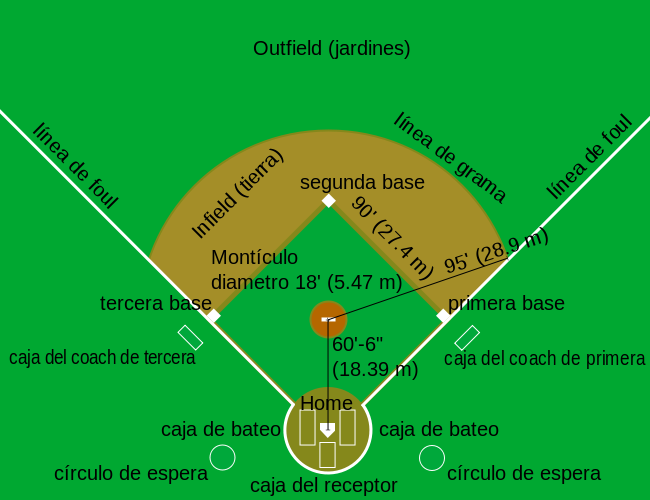

REGLAS DEL BEISBOL
- El equipo local comienza jugando a la defensiva.
- Si un bateador falla al intentar golpear la pelota, ese fallo se contabiliza con el nombre de strike. Si acumula tres strikes en su turno, queda fuera (out).
- Cuando tres jugadores a la ofensiva han sido puestos out, finaliza el turno ofensivo del equipo.
- Si el bateador golpea a la pelota y ésta cae en la zona de foul, la jugada no es válida. Las dos primeras veces que sucede esto, se cuenta como strike.
- Un corredor ofensivo queda out si no está pisando una base y un jugador defensivo lo toca con la pelota. O si tiene que desplazarse hacia una base, y un jugador defensivo tiene la pelota y pisa esa base.
- Si el bateador golpea la pelota y un jugador defensivo la atrapa antes de tocar el suelo, quedará out.
- Si el bateador golpea la pelota y ésta sale del campo por encima de la cerca que está al final del mismo, en la zona fair, se decreta home run o cuadrangular.
MEDIDAS DEL ESTADIO
Las medidas de la cancha de béisbol en metros se calculan teniendo como referencia al cuadro principal el cual mide unos 27,43 metros en cada lado. Finalmente la figura forma lo que se conoce como el diamante, el cual geométricamente constituye un rombo
